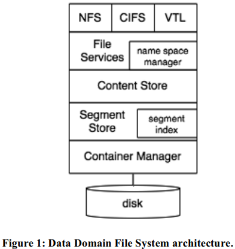
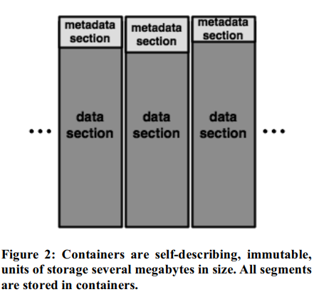

| Venue | Category |
|---|---|
| FAST'08 | Secure Deduplication |
Avoiding the Disk Bottleneck in the Data Domain Deduplication File System1. SummaryMotivation of this paperReduce the need for on-disk index lookups during the deduplicaiton processImplementation and Evaluation2. Strength (Contributions of the paper)3. Weakness (Limitations of the paper)4. Future Works
This paper wants to investigate how to do deduplication at high speed in order to meet the performance requirement for secondary storage used for data protection.
how to implement a high-throughput identical chunk deduplication storage system at low system cost reduce disk I/Os in high-throughput deduplication storage system.
Traditional method: maintain an on-disk index of segment (chunk) and use a cache to accelerate segment index access
the cache hit ratios is low: fingerprint values are random, no spatial locality, very little temporal locality. cause the real performance of deduplication cannot compete with high-end tape libraries. (i.e., 100MB/sec)
avoid wasted lookups for unexisted segments.
creates spatial locality
 Content Store: break a data stream into segments (chunking). Segment Store: perform deduplication. (does the actual work of deduplication), also does the data compression to further compress the data size, and writes compressed results into containers supported by Container Manager.
- chunking: byte range variable-length segments
- compute fingerprint: SHA-1 hash
- segment mapping: builds the tree of segments that records the mapping between object byte ranges and segment descriptors.
- A database of segments keyed by their segment descriptors.
- Segment filtering: key operation to deduplicated segments, may trigger disk I/Os.
- Container packing: adds segments to be stored to a container which is the unit of storage in the system. A container when fully packed, is appended to the Container Manager.
- Segment indexing update: segment index the container holder.
- allocating, deallocating, reading, writing and reliably storing containers.
- built on top of standard block storage
a bloom filter to summarize the existence information about fingerprints in the segment index. choose the basic Bloom Filter for simplicity and efficient implementation.
enable locality preserved caching, create spatial locality. Segment duplicate locality: when new data contains a duplicate segment , there is high probability that other segments in its locale are duplicates of the neighbors of . stream abstraction: segregates the segments created for different objects, preserves the logical ordering of segments within the Content Store. dedicated container holds segments for a single stream.
Benefits:
- multiple segments of the same data stream are written to a container together, reduce disk I/Os, and achieve high read throughput.
LPC will fetch the entire metadata section in a container, insert all fingerprints in the metadata section into the cache. Intuition: base segments in this containers are likely to be checked against for future duplicate segments. 
- check to see if this segment is in the segment cache
- check the Summary Vector, and lookup the segment index for its containers ID, insert the metadata section of that container into the segment cache.
cumulative total compression ratios increase as the system holds more backup data.
measure the number of disk reads for segment index lookups and locality prefetches.
write throughput is more important than read throughput